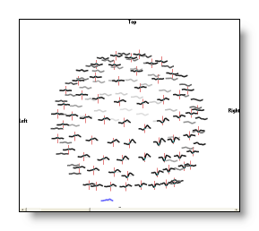
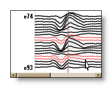
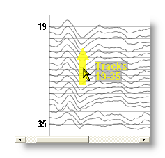
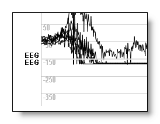

EEG Display
Buttons


Mouse
Chart of all mouse operations
Time selection
Tracks selection
Bad tracks selection
Horizontal scrolling or
Next / Previous tracks
Horizontal or vertical zoom
Relative vertical zoom
Keep current sub-window
Drag & Drop
Keyboard
Moving the cursor
Next or previous page
Beginning or end of Eeg
Quickly creating markers
Quickly jumping the cursor by blocks
Menus
Edit
Selection
Markers
Options
Reference
Time
Set Display Scaling
Set Time Window
Reset Tracks Scaling
Specify a Baseline Offset
Reset Baseline Offset
Line Width
Show / Hide Baseline Axis
Goto Another Session / Block
EEG - Buttons
Go here for the buttons common to all views.
Linking to other Eegs 
The way to proceed is the very same as for any standard view , but the targeted windows are exclusively restricted to other Eegs only . The link behavior is also slightly different from the standard link which is purely graphical. Here the window owner of the links will load the external data, use them as its own to superimpose them. If the user changes the number of tracks, scalings etc..., all linked data will also move accordingly (except filtering, which is still the sole responsability of each individual Eeg). Here is an example with 2 Eegs:
linked by=
Changing the number of tracks will naturally affect all the linked Eegs (here with 3 Eegs):
The color scheme for the linked tracks is the following: black, red, green, blue, cyan, magenta, yellow, then again these 7 colors in dashed, then cycles back to black, red, green, etc... You may find useful to also change the line width of the plotting to improve clarity.
Another point. Though Eeg views can only link to other Eeg views, non-Eeg views can link to Eeg views, so you can have this kind of display (a scalp potentials linking to a 3D view of its tracks):
Rendering 
(Go here for basic explanations on rendering)
Toggles between 3 or 5 display modes:
-
Default mode, a 2 parts display showing the regular tracks above, and some (if any) computed tracks below:
-
Split mode, a 4 / 8 parts display showing half / fourth of the current displayed tracks on each side, while repeating the computed tracks each time. Adding or removing some tracks will automatically be reflected in the splitting:
-
Each track is assigned an "individual box", and all the boxes will be optimally packed inside the current window. Changing the number of tracks displayed, or the shape of the window will affect the distribution of these boxes (just try it):
If the Eeg has been linked with some electrodes coordinates , that is, if geometrical information is available, the following 2 modes are also available.
-
Each track is also in a box, as seen above, but the boxes are positionned according to the projected locations of the electrodes :

-
Same as above, but the tracks are rendered in 3D:

This is the only real 3D mode available for an Eeg display, which therefore brings you with all the Standard 3D commands (mouse interaction and so on...).
Tracks / Bars / Intensity display
This button lets use choose between Tracks (line plots), Bars (filled) and Intensity (colors) displays:
Showing the Regions Of Interest
This button is enabled if a .rois file is available in the link many file , and the dimension of the rois is equal to the number of electrodes .
Pressing this button will cycle within all possible rois listed in the link many file. Once a roi is active, the tracks are grouped by each roi. And within each roi, tracks are also re-ordered, which could be a convenient way to reorganize tracks on the display!
Here is an example of 4 rois shown simultaneously; and then when only one roi is selected, with the tracks within it appearing re-ordered (according to the ROIs file):
The .ris files can, too, benefit from the ROIs, resulting in a far cleaner display. In this case, just provide the ROIs for Inverse Solutions :
You might be interested to learn how to create the rois file , too?
Averaging ROIs
If some rois are currently active, this will average all the tracks of each roi .
All the computations run first as usual (reference, filters, etc...), and only at the end the tracks belonging to the same region are averaged. All tracks of a given region will then receive the same averaged value:
See also the resulting maps of averaged rois.
Show triggers and markers
Turns on and off the display of both the triggers and the markers (see the specific menu for the markers). Triggers/markers are drawn in green in the Eeg display, with their descriptions on upper right.
Previous trigger
Set cursor position to the previous visible marker.
Next trigger
Set cursor position to the next visible marker.
Add a marker
Add a marker from the current cursor position, even if it is extended. Markers can overlap, but in this case they should differ at least either by their beginnings or their endings. Otherwise (i.e. they are equal) the old one will be overwritten.
Set the current marker description that will be used through the marker menu.
Extend cursor
Usually, it works automatically when setting the cursor with the mouse, you can see it toggling on and off.
However, it can be sometime very useful to proceed another way:
-
click on the button, or rather press the space bar (it toggles the button on)
-
extend the cursor with the left and right
arrows (do not use the mouse)
- when done, click again on the button, or press again the space bar (toggles it off)
Just be careful to close this mode, or your cursor is still "open" to modifications (which you might want, by the way)
Show upper tracks
When only a few tracks are on display, this button shifts to "upper"/previous tracks, adding one track at a time. If holding Shift down, it will shift for the actual number of tracks at each time.
Show tracks below
The same as previous, in the opposite direction.
Selecting a session 
This button is activated when the recording has many sessions into it (which I don't recommend nor understand, why not write a NEW file each time?). In this case, clicking on it will bring a dialog asking which session to open, starting from 1 to n. The current window will close, and reopen a fresh window of the requested session.
Less tracks 
Removes some tracks from display, starting with the last ones. Or if some tracks are currently selected, these will be removed.
More Tracks
Brings back some tracks on display, first adding after the last ones, then filling any gaps between the first and the last of the current display.
Less computed tracks
Removes some computed tracks from the display, starting with the last ones. Or if some computed tracks are currently selected, these will be removed.
More computed tracks
Gets back some computed tracks from the display, starting with the last ones.
Superimpose tracks
Superimposes current regular tracks.
When shrinking to a too small window, Cartool will superimpose tracks by itself to keep a clear display. In this case, it will also superimposes the computed tracks. At that time, toggling on or off this button will have no effect, except when expanding back the window to a regular size.
Reverse displayed polarity
Vertically reverses the display, showing the negative values above the 0, the positive values below 0. Just the display, not the data (it seems some people like it, in the south hemisphere maybe? 8).
Show standard deviation
This button is enabled when a file is found within the same directory, with the very same name, but with extension .epsd (standard deviation) or .epse (standard error). This detection is automatic.
This is a 3 states button:
-
no standard deviation shown
- standard deviation is drawn with dashed lines
- standard deviation is filled with transparent color
Increase vertical scaling
Or vertical zoom in, makes the tracks amplitude bigger. See also mouse operations and the relative mouse rescaling .
Decrease vertical scaling
Or vertical zoom out, makes the tracks amplitude smaller. See also mouse operations and the relative mouse rescaling .
Increase horizontal scaling
Or horizontal zoom in, makes the time interval smaller. See also mouse operations .
Decrease horizontal scaling
Or horizontal zoom out, makes the time interval bigger. See also mouse operations .
Show amplitude units
Draws the vertical units behind the tracks. If the tracks are too
much packed, you actually won't see any effect. There should be some
space in between the tracks, so select the one you are interested in,
or superimpose them. Then, by
changing the vertical scaling you
can see the scaling adapting itself to the data.
Tracks with different units or scales, like GFP
and Dissimilarity, have each a
separate and different scaling used.
Show time units
Draws time intervals behind the tracks, the space between them depending on the current horizontal scaling. The intervals are in milliseconds, starting from the beginning of the file, but if the Eeg has no sampling frequency value available, the intervals are simply put in time frames.
Filters
Brings up the dialog with all the available filters:
|
Filters |
|
|
DC / Baseline Removal |
Remove the DC, or 0 Hz. The time interval used to compute the DC depends on the context:
The DC Removal button is automatically selected when High Pass filtering is set, as to prevent well-known instabilities from the Butterworth (IIR) filter. Still, you can turn it off manually. You can also use it independently of the High Pass filter, just to quickly remove the baseline of the current displayed window. |
|
Butterworth High Pass: |
Specify the cut-off frequency, in Herz. See here for more details when combining with the Low Pass . The time interval used for the high-pass depends on the context:
|
|
Order (even, in [2..64]): |
Order of the Butterworth High Pass. Higher order filters perform better in terms of keeping the desired frequencies and rejecting the unwanted ones. This comes at the cost of more processing, and possible instabilities for difficult data. Due to current optimal implementations, order must be an even number , and is currently limited to the range [2..64]. |
|
Butterworth Low Pass: |
Specify the cut-off frequency, in Herz. See here for more details when combining with the High Pass . The time interval used for the low-pass depends on the context:
|
|
Order (even, in [2..64]): |
Order of the Butterworth Low Pass. Higher order filters perform better in terms of keeping the desired frequencies and rejecting the unwanted ones. This comes at the cost of more processing, and possible instabilities for difficult data. Due to current optimal implementations, order must be an even number , and is currently limited to the range [2..64]. |
|
|
|
|
Causal (forward ony) |
When set, this forces the filters to work as in a real-life recording machine. It filters by making use of data known so far, that is, "from the past and present" . Problem is the filtered signal has now some time delay. |
|
Non-Causal (forward and backward) |
When set (default), filters make use of all available data by applying the filters twice, once forward and once backward . The nice property is that it totally restores the time accuracy. |
|
Butterworth Notch(es): |
One or more notch values, in Herz. As hinted, Notch filtering is done with a Butterworth Bandstop filter of order 12, and a stopband of 1Hz . |
|
+ All Harmonics |
With this option, Cartool will add all the harmonics from the list of notch frequencies above , up to the Nyquist limit. This way you save typing them yourselves, with the risk of missing some of them. And it automatically adapts the bank of filters to the actual sampling frequency. F.ex. filtering some 50Hz power line noise with this option will filter out (assuming 1000Hz sampling frequency here):
You can opt out this option to have finer control of your series of notch filters if you wish so. But be aware that even if you Low Pass to 40Hz f.ex., many frequencies well above 40Hz will still be present and will need some actions. |
|
Spatial Filter: |
Applying the Spatial Filter to the data. Drag & Drop or click Browse to select an appropriate electrodes coordinates file . |
|
Ranking |
Rank the data. At each time frame, electrode values are sorted, and the data is then replaced with their ranks. Results are normalized with the number of electrodes, the results therefor being in the range [0..1] (0 for the lowest value, 1 for the highest value). |
|
<Reference computation here> |
This is just to formally show where Cartool computes the reference, so just after the filters above. The next filters will use the optionally re-referenced data. |
|
Rectification: |
Making the data all positive. Usually a step before the Envelop filter below, but it can also be interesting sometimes to force the data to absolute. |
|
Absolute value |
Absolute of input value. |
|
Squared value (Power) |
Squared of input value, therfor equivalent to a power. Of course, results are positive... |
|
+ Envelope, of window duration: |
Compute the Envelope, a kind of fast frequency analysis. To be able to compute the Envelope, all these points must be fulfilled:
|
|
Thresholding, keeping Above: |
Cutting the data at the specified threshold, keeping the values above . |
|
Thresholding, keeping Below: |
Cutting the data at the specified threshold, keeping the values below . Both Above and Below options can be used at the same time. In that case remaining values are both above and below the specified thresholds (interval). |
|
Options |
|
|
Sampling Frequency (set if missing): |
If the current file has a sampling frequency, its value will be shown here. If not, the field is editable, and it is mandatory to have a value entered to be able to apply any of the filters. |
|
Also apply filters to: Auxiliaries Channels |
Specifies if the auxiliary electrodes are to be filtered. |
|
Switch On / Off all filters set |
You can turn on and off all the currently entered filters. This is very convenient to see the effects of a set of filters, by simply turning the filtering on and off. |
|
OK |
Accept the filters. This button remains disabled until all the parameter dialogs have received enough (and consistent) informations . If this is not the case, first check the current dialog: if its "Next" button is disabled, the problem is in the current dialog. Otherwise, browse the other dialogs for some missing informations. |
|
Cancel |
Quit the dialog, and remain in the previous filtering state. |
|
Help |
Launch the Help to the right page (should be here...). |
Filters combination and sequence
Filters are applied sequentially, following the top-down design of the dialog . This means DC filter is first to be applied, then the Butterworth, then the Spatial Filter and so on and so forth. Most of these filters are not linearly permutables, which means the actual sequence does matter a lot on your results! The current sequence is the results of 25+ years of experience in the field.
When applying both the Butterworth High Pass and the Butterworth Low Pass filters , they will be automatically merged into a single Butterworth Bandpass filter (instead of running these two filters sequentially):
-
Order of the Bandpass will be the
sum of
orders from the 2 single Butterworth filters
.
F.ex. if High and Low passes have each an order of 4, then the resulting Bandpass will have order of 2x4=8.
This makes the final Bandpass filter orders to be multiples of 4. - Bandpass will therefore be two times more powerful than the single filters alone, due to the doubling of order.
Filtering only affects the display in real-time , and does not alter the original data . To permanently change the data, you can either call File | Save As, or go through the more versatile Export Tracks toolbox.
Filter causality
Sometimes, one needs to control how the filters make use of "data from the future", so to speak.
A filter that receives data only from the past and present is said to be causal, and non-causal if it makes use of data from the future. The latter case can only happen once the recording has been done. It is done by applying the filter once forward, then again once backward.
Non-causal filter
The enormous advantage of the non-causal filtering for EEG analysis is that it restores the phases of the original signal. This means peaks' locations remain stable. It also restores the phases for all frequencies, so the reconstructed signal also corresponds to the original one, minus the removed frequencies of course. It is the default option, and is widely used in the EEG community.
Note: when applying twice a filter, the decay at cut-off frequency will no longer be -3dB (filter has been applied twice!). Cartool counteracts this effect internally by operating a slight adjustment to the cut-off frequency, so that the double-filtering has an actual -3dB decay at cut-off.
Causal filter
This can be used if one wants to make sure no data from the future might have back-propagated and caused possible interference with the results. This option is to be used mainly for picky reviewers... Note that all real-time implementations like a recording machine must use a causal filter - if any.
One big disadvantage a causal filter is the delay added to the resulted filtered signal . Peaks locations are no longer at the right time positions! An aggravated issue is that the phase shifts differ at each frequency, slightly "scrambling" the data.
Pamphlet you can include for publications
Here is the technical pamphlet for a single Butterworth filter, replacing <actualorder> by the order used in the dialog:
The Butterworth Low / High pass filters are <actualorder> order filters, with <-20 x actualorder> dB/decade roll-off and maximally flat response. They are implemented as cascaded 2nd order sections with bilinear transform, and applied twice with one forward and one backward pass to eliminate the phase shift.
When both High Pass and Low Pass filters are applied , it ends up with a Butterworth Bandpass - note the doubling order from the dialog numbers:
The Butterworth Bandpass filter is a <2 x actualorder> order filter, with <-40 x actualorder> dB/decade roll-off and maximally flat response. It is implemented as cascaded 2nd order sections with bilinear transform, and applied twice with one forward and one backward pass to eliminate the phase shift.
The Notch filter is implemented as a Butterworth Bandstop filter - note the optional part if you selected All Harmonics:
The Notch filter is implemented as a Butterworth Bandstop filter of order 12, with -240 dB/decade roll-off and maximally flat response, and a stopband of 1Hz. It is implemented as cascaded 2nd order sections with bilinear transform, and applied twice with one forward and one backward pass to eliminate the phase shift. <optional part> Harmonic frequencies have also been filtered out with cascaded Notch filters, up to the Nyquist limit.
Note that if you are going to comment on all these filters in the same section, you can shorten these pamphlet to avoid repeating the implementation details that are exactly identical.
Reference
Reference used for the implementation of the Butterworth filters:
"Recursive Digital Filters - A Concise Guide", S. Hollos, J.R. Hollos, Abrazol Publishing, 2014, Exstrom Laboratories
Time and frequency constraints
Filters frequencies have some intrinsic limits (Nyquist and all these sorts of things), that Cartool will gracefully check for you when specifying new values. These limits depends on the sampling frequency (see below) AND the filter window (the number of time frames given to the filter function):
-
Cartool will silently expand your requested time interval, compute the filters, then crop out the extra margin.
-
The additional time margin is the maximum of:
-
For High-pass filter, half the biggest possible period, that is order / ( high pass cut-off * 2 )
-
For Low-pass filter, the shortest possible period, that is order / ( low pass cut-off )
-
For Band-pass or Band-stop, the max of the first two above
-
For Notch filter, a multiple of the period of the fundamental ( 6 * 12 ) / notch cut-off
-
For Envelope filter, 2 * Envelope width
-
-
Some filters don't need any extra margin, being instantaneous like the Ranking, Spatial, Rectification, Thresholding filters etc...
-
At the beginning and ending borders of the tracks, a mirroring technique is used to fill the needed time points.
-
Filter parameters are then checked against this expanded time interval. The actual frequency limits will therefore vary according to the window size / horizontal scaling.
-
If the current display window size changes, the frequencies of the filters will be temporarily clipped within the new limits . Though, the user-specified values are not lost, and restoring a bigger window will disable the clipping and the original values be used. This always brings the user on the safe side of the filters, at the expanse of changing the filter values.
We developped a very specific spatial filter to improve the SNR of the data , a step which greatly improve the segmentation and the computation of inverse solution results:
-
This is an instantaneous filter, it only makes use of the electrode values at a given time point
-
It works partly as a non-linear statistical filter by removing outliers
-
And it also works partly as a linear smoothing filter , the weights coming from the electrodes spatial distribution
Method description
For any given time point:
-
Repeating for each electrode:
- The values of the 6 closest neighbors are determined, plus the central electrode value itself.
- These 7 data points are then sorted.
- The minimal and maximal values are removed by dropping the first and last items of this list.
-
The new electrode value is the
weighted average of the 5
remaining values
, with weights being proportional to the
inverse distance to the central electrode. The
central electrode is given a weight of 1.
Here is a visual example of the 6 closest Delaunay neighbors, with the 2 extrema values removed (left), then the resulting smoothing (right):
Technical points
-
The spatial filter is very similar to an Inter Quartile Mean (IQM), but in our case cutting the Cumulated Density Function into 7 intervals instead of 4. We can therefor call it an Inter Septile Weighted Mean .
-
The spatial filter is reference independent. It doesn't care if the reference is computed before or after the filter. Indeed, any additive constant will change neither the ordering nor the weighted sum (apart from the constant shift itself, of course).
-
The spatial filter produces reliable average maps, which is not the case with other formulas, like the regular Inter Quartile Mean. This is very important for computing template maps from the segmentation .
-
The weights are derived from the 2D Delaunay triangulation computed between the electrodes positions. Note that in order to be scale-free, the distances are normalized so that the average distance between the closest neighbors is equal to 1.
Finally, we can see here an example of before (A) and after (B) the Spatial filter, on the tracks (left) then on the maps (middle and right):
Reference
This is the published reference about the Spatial Filter:
"EEG Source Imaging: A Practical Review of the Analysis Steps", C.M. Michel, D. Brunet, Front. Neurol., 04 April 2019
Average Reference
Toggles on or off the Average Reference. This is equivalent to setting the average reference through the Menu .
Brightness 

Only when in the Intensity mode can you adjust the brightness / intensity of the colors.
This is equivalent to changing the value assigned to the maximum color.
See an example here, with the MRI display .
Contrast 

Contrast does not change the maximum value mapped to the maximum color, but changes the slope of the mapping, increasing or decreasing the color differences between low and high values.
See an example here, with the MRI display .
Color auto scaling 
Sets the maximum volume value to the maximum color value. Put it another way: automatically sets the brightness to match and correctly display the data. Consequently, the brightness buttons become inactive, but still the contrast can be adjusted.
Color modes 
Cycles through different color tables (black to white, white to black, black to yellow to white, etc...).
EEG - Mouse
Go here for the mouse actions common to all views.
Chart of all mouse operations for EEG
|
Alternate key Mouse button |
None |
Shift |
Control |
Control+Shift |
|
Left |
time selection |
|
|
same as Shift Middle |
|
Middle |
|
|
|
|
|
Right |
|
|
|
|
|
Double Left |
|
|
|
|
Time selection: left click
Click (and extend) the left button to set the current time point/time range:
If you hold down the left button, you can extend the cursor to any size you want, even outside the current window. In this case, the window will scroll while you move the cursor outside the window:

See also the keyboard way of moving the cursor .
Tracks selection: middle click
Click (and extend vertically) the middle button to select/deselect some tracks.
You can use Control + left click if you don't have a middle button. Also note that you have to click close to the baseline of the track, not on the track itself!
The selected tracks are drawn in pink:
To deselect some tracks, middle click again on them.
To deselect all tracks, middle click somewhere far enough from the tracks, say, around the electrode names.
For more controls and possible uses, see the menu Selection.
The tracks selection does not interfere with the time selection at all.
Bad tracks selection: Shift + middle click
Use Shift and click the middle button to set/reset some bad tracks.
The bad tracks are drawn in light red:

Bad tracks (broken electrode, noisy signal etc...) are taken out of the calculus of the computed tracks, and the number of significant electrodes decreased by their amount. They are also independently rescaled, so that any high amplitudes will not visually degrade the display. You can easily show or remove them through the Selection menu.
Horizontal scrolling or Next / Previous tracks: right click
Click the right button, then drag either horizontally or vertically .
If the initial direction of the mouse is horizontal, the window will be subsequently scrolled horizontally. Otherwise, the scrolling will be applied vertically, to the tracks, by shifting to the next/down tracks or the previous/upper tracks. More intuitive if you try it!
The visual hints associated, moving horizontally (time), or vertically (tracks):


Horizontal & vertical zoom: Shift + right click
Use Shift and click the right button, then drag either horizontally or vertically .
The direction you choose will select which dimension will be zoomed in/out: horizontal or vertical.
When zooming horizontally, Cartool will center the current view to the current cursor position, which can be handy to quickly recenter your view to a given time frame.
See also the next point below to some some tracks specifically.
The visual hints associated, for the vertical and horizontal zoom:
Relative vertical zoom: Control + Shift + right click
Use Control + Shift and click the right button, then drag either horizontally or vertically.
This will zoom in/out only the currently selected tracks , using the same procedure as the global scaling .
If no tracks are selected, then the global scaling applies. The procedure can be repeated as many time, and on any tracks subset, as needed.
To reset the scaling to the global default, use the Options | Reset tracks scaling menu.
This is a way you can emphasize (interesting but too small) or de-emphasize (noisy and big) some particular tracks by giving them a local scaling of their own:
-
a regular, uniform scaling:
-
some specific scaling:
Finally, note that the rescaling buttons will only work globally, even though some tracks might be selected.
Baseline offset shifting: Control + right click
Use Control and click the right button, then drag vertically .
This will move the whole tracks baseline (axis) up and down. If the data are highly skewed toward an extreme value, this allows the re-center the display around that limit, and then play with the vertical zooming as usual.
To manually set a baseline value, or to reset it to its default (i.e. 0), see the Options | Reset baseline offset menu.
See here the default baseline, and a shifted baseline of -150:

The visual hints associated when shifting the baseline:
Keep only one sub-window: double left click
When the EEG tracks are rendered into different sub-windows, double left clicking one of these will switch the display to that single sub-window alone.
Drag & Drop
You can Drag & Drop any .mrk file into the window , and all markers from that file fitting the current EEG time range will be added to the current list.
EEG - Keyboard
Go here and here for the keyboard actions common to all views.
Moving cursor
With left and right arrows, you move accordingly the time cursor . Another way is to use the mouse. However, using the keyboard is more accurate, and while holding down the key, Cartool will slowly accelerates. When the cursor leaves the last visible time frame, Cartool will scroll the display of an appropriate amount. Altogether with the acceleration, you can easily browse to even huge files very efficiently.
To prevent the automatic acceleration, press Control + left or Control + right arrows, so you can go through all time frames.
An extended cursor is moved the same way, though it may appear to behave strangely sometimes. In case the cursor is actually wider than the number of time frames currently displayed, moving the cursor forward will show only the end of the cursor. And moving the cursor backward will show only the beginning of the cursor.
Next or previous page
Use the page down and page up to jump to the next or
previous screen respectively. The amount of time frames jumped over
is exactly the number of time frames currently displayed. These keys
will also slowly accelerate when held down.
The cursor will also jump accordingly, that is, it will remain stable
within the window.
Beginning or end of Eeg
Pressing the home key will of course scroll the display to time frame 0, and set the cursor to 0. Conversely, pressing the end key will do the same with the last time frame. The number of time frames displayed is not altered.
Quickly creating markers
Pressing Control + Numpad 1 to 9 to set the any of the 9 possible quick markers:
-
On first call, Cartool will ask the associated marker name for that keystroke combination
-
On later calls, Cartool will create a marker at current cursor position , using the marker name entered on first call
Quickly jumping the cursor by blocks
Pressing Control + Left or Right arrow to move the cursor backward or forward, of the amount of its current size.
F.ex. if the cursor is currently extending from time frame 0 to 99, pressing Control + Right will make the cursor jump to 100 to 199, then 200 to 299 and so on. Combine this with quickly creating markers , then you have a winner combo to quickly browse a file and tag blocks of data.
EEG - Menus
Edit menu
Copy as Text
Copy to the clipboard the current selected tracks , and for the current selected time , in a text format. If no tracks are specially selected, then all tracks are taken. The output format is: a row holds all electrodes of 1 time frame, and the number of rows is the number of time frames . Values are tab separated, with new line at the end of each row, so you can properly paste both in a text editor and Excel.
Copy as Bitmap
Do a snapshot in the clipboard, see here.
Obsolete, please use the new Export Tracks.
Selection menu
This (extensive) menu is about tracks selection and categorization.
Please note that only the non-trivial functions will be commented, otherwise each command is considered self-explanatory!
Main list
Keep current selection
..on display
Exclude current selection
..from display
Clear selection
Select all tracks
Select all visible tracks
Invert selection
Select tracks above threshold
Tracks that are in absolute value above a user-specified threshold.
Select tracks from a list
The user provides a list of tracks name to select from
Bad tracks
Set current selection as Bad tracks
Flags the selected tracks as bads, which removes them from some computation, like GFP, Disssimilarity and Average.
Restore all bad tracks to Normal
Restore only the selected bad tracks
Keep only the current bad tracks
Exclude the current bad tracks
Select current bad tracks
..from either the current selection, if any, or from the current displayed tracks otherwise.
Deselect current bad tracks
..from either the current selection, if any, or from the current displayed tracks otherwise.
Select current non-bad tracks
..from either the current selection, if any, or from the current displayed tracks otherwise.
Select current non-bad / non-aux tracks
..from either the current selection, if any, or from the current displayed tracks otherwise.
Auxiliary tracks
Set current selection as Auxiliary tracks
Flags the selected tracks as auxiliaries, like ECG, EOG etc...
Usually, Cartool will ask you if you want to remember your new auxiliaries configuration as the default (for your current type of file only). If yes, any future opening of that type of file will use your configuration. If no, your configuration will only apply to the lifetime of your current opened file.
Restore all auxiliary tracks to Normal
Same remark as above.
Restore only the selected auxiliary tracks
Same remark as above.
Restore auxiliaray tracks to default
Reset the auxiliary configuration to its default (for your current type of file only), forgetting any override you may have done before.
Keep only the current auxiliary tracks
Exclude the current auxiliary tracks
Select current auxiliary tracks
..from either the current selection, if any, or from the current displayed tracks otherwise.
Deselect current auxiliary tracks
..from either the current selection, if any, or from the current displayed tracks otherwise.
Select current non-auxiliary tracks
..from either the current selection, if any, or from the current displayed tracks otherwise.
Select current non-bad / non-aux tracks
..from either the current selection, if any, or from the current displayed tracks otherwise.
Tracks analysis
(note that these are currently experimental functions, but you risk nothing by trying/using them!)
Search Flat tracks
Select tracks with constant values, which usually were not recorded. Note that the reference track should be kept and is/should not be selected by this method:
Search Broken / jerky tracks
Select highly saturated, or very random tracks, which clearly haven't recorded anything EEG-like:
Search Outlier / noisy tracks
Select tracks that do look like EEG, but of very low informational quality. These tracks stand out from the others, even after filtering, and therefor greatly degrade the GFP (or Standard Deviation):
Search Altogether: Flat + Broken + Outlier tracks
Use all three criterion above to search for globally artefacted tracks. First image shows the selection, second image shows the selection flagged as bad tracks, clearing up the display:
Remarks on the tracks analysis:
-
The analysis goes through a lot of statistics computed on all electrodes and on the whole time range (minus the first and last 10%, and sometimes minus the eye blinks epochs). The results are tracks that are globally bad all over the recording, not at some specific epochs like eye blinks.
-
The analysis uses your current filters, because this is what will matter for your processing at hand. Changing the filters will likely change the results of the analysis, like a high-pass that can help recover a drifting track, or a Notch with line interference. It shouldn't be dramatically different, though.
-
The analysis is done with the recording reference, re-referencing is not used.
-
The 3 processing run in increasing complexities, so in case of doubts, run them sequentially from the first one to the last one.
-
Bear in mind that the result is just a track selection, and that no action has been really taken. It is up to you to just ignore the result, or to manually include / exclude some other tracks, and to actually flag the selection as bad tracks.
-
The analysis is primarily targetting EEG recordings, because it contains all the original noise and artefacts. You can run it on ERPs, though, but the averaging process might have hidden some of the artefacts.
Markers menu
Don't remember what is a marker, a trigger or an event? or the .mrk marker file format ?
-
"24" will be splitted into markers "16" and "8";
-
"17" into "16" and "1";
-
"6" into "4" and "2";
-
"3" into "2" and "1".
Add marker at current cursor position
Add a new marker from the current cursor position (even extended). Markers can overlap, though the display could end up to be rather messy. If more than one marker name currently exists in the list of markers , then a list will pop out for you to choose the marker name.
You can also easily and quickly create new markers from the keyboard .
And you can add markers with Drag & Drop -ing other marker files , too.
Delete markers within cursor range
Deletes only the markers that are entirely included within the current cursor position. Be careful, no undo is possible.
Delete markers by names
Deletes only the markers that match a given string expression . Be careful, no undo is possible.
Delete all markers, for the whole file. Be careful, no undo is possible.
Enter the string expression to be searched across all marker names.
Next hit
Goto next successful search hit.
Previous hit
Goto previous successful search hit.
Rename markers within cursor range
Force renaming all markers within the current cursor range.
Rename all markers
Specify a substring to be replaced (any type of characters), and a replacement substring. It will run through all occurences within a marker name, replacing the old string by the new one, and for all markers. If the replacement string is empty, this will delete the searched string.
Applications are numerous, as replacing spaces by "_", or the other way round, changing esoteric codes (173) into meaningful messages ("Elephant sound"), merging different codes into a single one, and so on.
Merge exact overlapping markers
All markers that perfectly overlap (same starting points and same ending point) will be merged together, also merging their names.
Merge identical contiguous markers
Merge markers with the exact same name and that are contiguous in time. This can be useful if you have labelled blocks of data that you want to re-group into bigger blocks.
Scanning tracks to generate markers
Applies a few different methods to generate markers from the tracks themselves.
Duplicate triggers into markers
Copies all triggers into markers, which allows you to further process / edit them, which is not the case for the triggers.
You also have to select the correct display, if you want to see only the markers, as otherwise you will see both the triggers and the markers, which can be a little bit confusing.
Split bitwise triggers / markers names
This will scan the currently displayed triggers or markers, and will split them according to their names, creating new markers. The idea is to break each name into its binary components, f.ex.
To be more selective, a mask has to be specified before running the process. Only the bits set to 1 in the binary representation of that mask will be processed. F.ex. if the mask is 255 (1111 1111 in binary), we will have all the markers of the previous example. However, if the mask is 17 (0000 1001 in binary), the results would only be "16", "16" and "1", nothing, "1". In this way, you can restrict the generated markers.
This process is applied only to the currently displayed type of triggers / markers. However, only markers are generated.
The names have to be integer, you can not split triggers whose names would be "Eyes open" or "Abcd"!
Manage the list of marker names
Brings the list of currently known marker names. Then you can add a new name, modify existing names, or delete names.
At least one name should remain in the list, though.
Import markers from file
Reads another .mrk file and copies its markers.
Switch to another marker file
(Advanced feature) This will switch the currently associated .mrk file (storing the markers), to another .mrk file. Any subsequent updates will then occur on this file.
-
None
-
No triggers or markers of any sorts are displayed
-
Toggles on or off the display of events
-
Toggles on or off the display of triggers
-
Toggles on or off the display of markers
All
-
Shows all available events, triggers and markers
Filtering display
Show only the triggers / markers that successfully match a string expression .
This is a very useful feature to show a restricted subset of markers, hiding all the others, and therefore increasing the display readability when too many markers coexist together.
Notes on marker files
When all markers have been deleted, the .mrk file associated to the Eeg file will be also deleted. Conversely, when the very first marker is created, the .mrk file is also created.
For security reasons, any time you add or remove any single marker, the .mrk file is immediately updated on disk. This way, in case of any crash, your markers will be securely saved.
Options menu
-
A high density of time points, and / or a high number of tracks will select the thinnest line width available.
-
Less tracks, or less time points, or bigger window,
or more zoom will little by little increase the line width.
- Superimpose mode will always select the thinnest line width.
-
As in file
-
No subtraction occurs, the data are shown exactly as they are
stored
in the Eeg file
(then you should know which reference was used...)
-
After applying any filters, the
mean value of the tracks is
computed and
subtracted to all tracks. This is repeated for
all time frames idependently. See the
formulas,
and the
equivalent button.
Single track
-
After applying any filters, the
value of the
specified
track is subtracted
to all tracks. This is repeated for all time
frames idependently.
Multiple tracks
-
After applying any filters, the
average value of the
specified
tracks is subtracted
to all tracks. This is repeated for all
time frames idependently.
Montage
-
First requires a
.mtg
montage file
. After applying any filters, and according to the
montage specifications, any mix of
differences between pairs of tracks
or
single tracks values are shown. This is repeated for all
time frames independently. This affects only the display, not the
data themselves, so you can not export the results.
Within one of these modes, the results are correctly positionned between the two subtracted electrodes, giving a visual cue of your montage.
-
Show Date
-
If the date information is available from the Eeg file, either choose
to show it or not.
Show Time
-
If the time information (in hours/minutes/seconds etc...) is
available in the Eeg file, either choose to show it or not.
Absolute time, from the recording
-
Choose to use the absolute time, the one when the recording has been
done, f.ex. starting at 9h37m10s.
You can then relate some events in the EEG to the ones in "real" life, like seasures.
Relative time, origin at the beginning
-
Set the time origin at the first Time Frame recorded, giving you a
relative time starting at 0h0m0s.
Relative time, arbitrary origin
-
Set the time origin to an arbitrary position in the file. By default,
Cartool will propose the current position of the cursor, or you can
give any value as a relative offset from the beginning of the file.
You can give a position that is not within the relative time range of the file, and even a negative value.
This is the feature used to automatically set the origin if a marker is found with the name "Origin". The origin is drawn with the little vertical bar on the time axis:
Go to time origin
-
Quickly move the Time Cursor to the time origin.
Set Display Scaling
Ask the user (you actually...) to give the maximum amplitude to be shown in the current window. Works until you rescale the window.
Set Time Window
Give a time range for the current page. Default input is in milliseconds, but you can override it by adding "s" for seconds, f.ex.: 10s, 2.5s etc...
Some tracks might have user-defined relative scalings , making them appear greater or smaller then their peers. This will reset these differential scalings. If no tracks are selected, all tracks are reseted, otherwise only the selected ones will be.
Specify a Baseline Offset
Vertically shift the whole tracks of the specified amount, setting it as the new the baseline value.
Reset Baseline Offset
Reset to 0 the baseline offset.
Specify a line width. Default is 0, which activates the Smart Line Width features. This will choose the best line width according to the context:
If not 0, the width specified will be used as is. Valid values will depend on your graphic card, including fractional numbers, and 1 being the default.
Show/hide Baseline Axis
Nothing to add.
Goto Another Session / Block
If the Eeg file embeds multiple recordings, sometime known as sessions or blocks, you can shift to another one. See this button.
Easy publish
This feature is not yet implemented, but will be very soon. For sure, it will scan your data, analyse them, do all the tests, output the figures, and build an article ready to be accepted in the highest ranked publications. And everything done in 5 minutes while playing your favorite mp3 playlist.